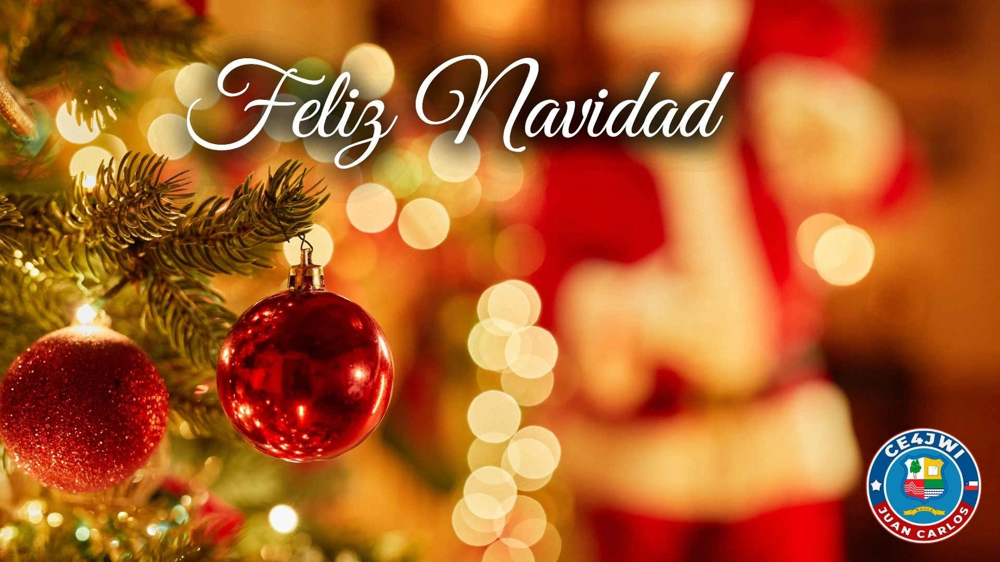

24 de Diciembre 2025

La Navidad es una fiesta anual que conmemora el nacimiento de Jesucristo y que se celebra principalmente el 25 de diciembre como fiesta religiosa y cultural entre miles de millones de personas de todo el mundo.
La Navidad es una época del año en la que las familias y amigos se reúnen para celebrar, intercambiar regalos y compartir momentos especiales juntos. Es una festividad que se caracteriza por la alegría, la generosidad y el espíritu de amor y paz.
Durante la Navidad, es común decorar los hogares con luces, árboles de Navidad, adornos y pesebres que representan el nacimiento de Jesús. También se realizan diversas tradiciones, como cantar villancicos, asistir a misas especiales y preparar comidas festivas.
Además de su significado religioso, la Navidad también tiene un aspecto comercial importante, ya que muchas personas compran regalos para sus seres queridos y participan en actividades de compras navideñas.
La Navidad también se celebra en las ondas
Para los radioaficionados, diciembre es un mes de encuentros en el aire: abundan las estaciones de evento especial con temática navideña, como la famosa N8P, que cada año se activa desde Ohio con el indicativo especial "North Pole" para repartir saludos y diplomas a quien logra el contacto. Si escuchas un indicativo de pascua en la banda, no dudes en pasarle un 599 y cerrar el QSO con un cordial "Merry Christmas".
El 25 de diciembre de 2025 cae en jueves. Al saludar a colegas de Europa o Norteamérica recuerda el huso horario: cuando en Chile ya estamos celebrando, en gran parte del mundo recién comienza la víspera. Prepara tu radio y sé el primero en dar el 73 navideño.
Pascua al estilo chileno
Como toda buena tradición chilena, la Navidad se vive en pleno verano: pan de pascua, cola de mono, los regalos del Viejo Pascuero y una cena familiar al caer la tarde. Es la fecha más familiar del año, y por eso aprovechamos de enviar desde el aire un cordial saludo a todas las familias que celebran juntas.
ESTA ACTIVIDAD ES PARA CELEBRAR LA NAVIDAD 2025 Y DAR FELICITACIONES A TODOS LOS RADIOAFICIONADOS DEL MUNDO
COMO RADIOAFICIONADO REALIZARÉ ESTA ACTIVIDAD A UN SOLO CONTACTO